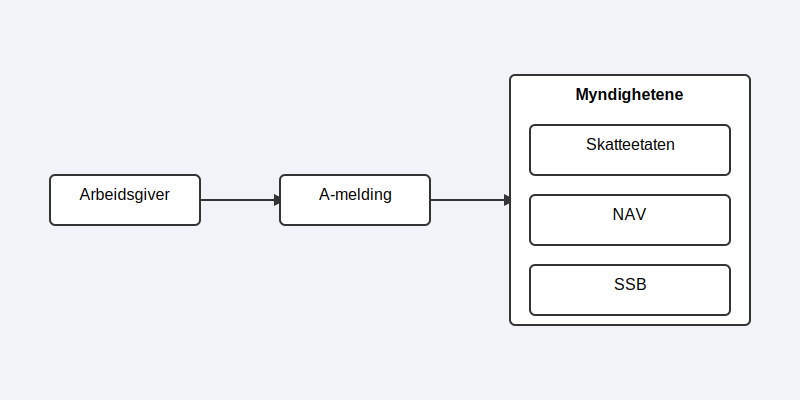
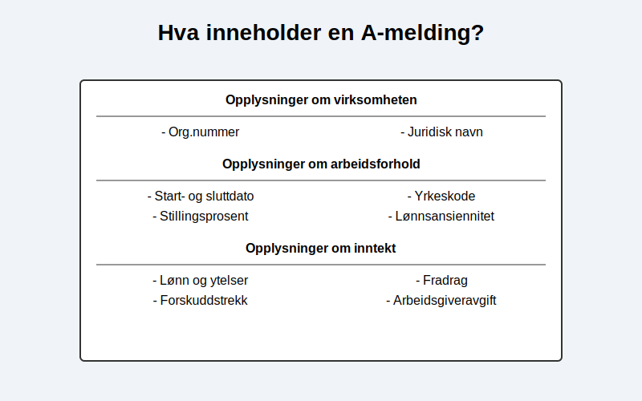

A-melding, også kjent som samordnet registermelding, er en månedlig digital rapport som alle arbeidsgivere i Norge er lovpålagt å sende inn til myndighetene. Rapporten inneholder detaljerte opplysninger om inntekter, arbeidsforhold og forskuddstrekk for hver enkelt ansatt. Formålet med a-meldingen er å forenkle rapporteringsprosessen for arbeidsgivere og samtidig sikre at sentrale etater som Skatteetaten, NAV og Statistisk sentralbyrå (SSB) har et nøyaktig og oppdatert datagrunnlag.
A-meldingen er et viktig eksempel på egenmelding - selvrapportering hvor arbeidsgivere selv har ansvar for å rapportere korrekte opplysninger om lønn og arbeidsforhold til myndighetene. Som en sentral del av opplysningsplikten, representerer a-meldingen bedrifters lovpålagte ansvar for å dele økonomisk informasjon med offentlige myndigheter.
Denne ordningen, kjent som A-ordningen, effektiviserer informasjonsflyten og danner grunnlaget for en rekke offentlige tjenester og statistikker, fra beregning av skatt og trygdeytelser til offisiell lønnsstatistikk.

Hvem skal levere a-melding og når?
I utgangspunktet skal alle som har ansatte, eller som utbetaler lønn, ytelser eller godtgjørelser, levere a-melding. Dette gjelder for:
- Bedrifter og organisasjoner: Uavhengig av størrelse og bransje.
- Private arbeidsgivere: For eksempel om du har en vaskehjelp eller en gartner ansatt privat.
- Veldedige og frivillige organisasjoner: Selv om lønnen er lav eller arbeidet er sporadisk.
Plikten gjelder selv om det ikke har vært noen lønnsutbetalinger i en måned, så lenge arbeidsforholdet består. I slike tilfeller leverer man en “null-melding” for å bekrefte at det ikke har vært aktivitet.
Frister for levering
A-meldingen skal leveres hver måned med en fast frist den 5. i måneden etter lønnsutbetalingen. Hvis den 5. faller på en helg eller helligdag, er fristen neste virkedag.
Hva inneholder en a-melding?
En a-melding er bygget opp av informasjon om selve virksomheten og detaljerte opplysninger for hver ansatt. De sentrale elementene er:
- Opplysninger om arbeidsforhold: Dette inkluderer startdato, eventuell sluttdato, stillingsprosent, yrkeskode og type arbeidsforhold (fast, midlertidig, etc.).
- Opplysninger om inntekt: Her spesifiseres all skattepliktig og trekkpliktig lønn, faste og variable tillegg, helligdagslønn og tilleggsgodtgjørelse for arbeid på helligdager, naturalytelser (som fri bil eller telefon), og eventuelle godtgjørelser.
- Forskuddstrekk og fradrag: Beløpet som er trukket i skatt av den ansattes lønn.
- Arbeidsgiveravgift: Grunnlaget for beregning av arbeidsgiveravgift.

Hvordan levere a-melding?
Det finnes i hovedsak to måter å levere a-melding på:
- Via et lønnssystem: De fleste moderne økonomisystemer har integrert funksjonalitet for lønn og a-melding. Systemet genererer automatisk rapporten basert på lønnskjøringen og sender den direkte til Altinn. Dette er den mest anbefalte metoden, da den reduserer risikoen for feil.
- Direkte i Altinn: For mindre virksomheter med få ansatte er det mulig å fylle ut og levere a-meldingen manuelt ved å logge inn på Altinn sine nettsider.
Hva brukes informasjonen til?
Dataene fra a-meldingen er kritiske for flere offentlige funksjoner:
- NAV: Bruker informasjonen til å beregne og utbetale ytelser som sykepenger, foreldrepenger, dagpenger og uføretrygd gjennom folketrygden. Korrekte data sikrer at den ansatte får det de har krav på.
- Skatteetaten: Anvender dataene til å oppdatere skattekort, lage den forhåndsutfylte skattemeldingen, og kontrollere innbetaling av forskuddstrekk og arbeidsgiveravgift.
- SSB: Bruker anonymiserte data til å produsere viktig statistikk om lønn, sysselsetting og sykefravær i Norge.
Konsekvenser av feil eller manglende levering
Å levere a-meldingen for sent eller med feilaktige opplysninger kan føre til sanksjoner. Skatteetaten kan ilegge Tvangsmulkt for hver dag meldingen er forsinket. Ved vesentlige feil kan det også medføre tilleggsskatt eller i alvorlige tilfeller anmeldelse.
Det er derfor svært viktig å ha gode rutiner for lønnskjøring og innsending av a-melding. Dette inkluderer korrekt føring av ansattreskontro for hver ansatt og månedlig avregning av lønn, trekk og arbeidsgiveravgift.
Les også: Hva er en faktura?
Relaterte ord
- A-ordningen
- Altinn
- Lønn
- Lønnskostnad
- Tabelltrekk
- Virksomhetsnummer